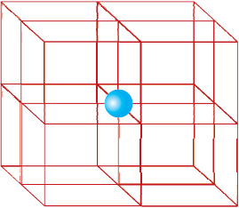
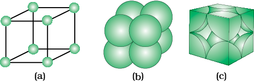
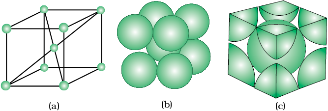
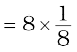
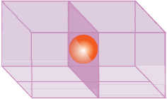
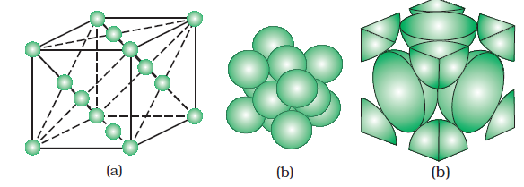

atom per unit cell = 6 × = 3 atoms
atom per unit cell = 6 × = 3 atomsWe know that any crystal lattice is made up of a very large number of unit cells and every lattice point is occupied by one constituent particle (atom, molecule or ion). Let us now work out what portion of each particle belongs to a particular unit cell.
We shall consider three types of cubic unit cells and for simplicity assume that the constituent particle is an atom.

In a simple cubic unit cell, each corner atom is shared between 8 unit cells.

A primitive cubic unit cell (a) open structure (b) space-filling structure (c) actual portions of atoms belonging to one unit cell.
A body-centred cubic (bcc) unit cell has an atom at each of its corners and also one atom at its body centre. It can be seen that the atom at the body centre wholly belongs to the unit cell in which it is present. Thus in a body-centered cubic (bcc) unit cell:

A body-centred cubic unit cell (a) open structure (b) spacefilling structure (c) actual portions of atoms belonging to one unit cell.
(i) 8 corners × per corner atom  = 1 atom
(ii) 1 body centre atom = 1 × 1 = 1 atom
∴ Total number of atoms per unit cell = 2 atoms
A face-centred cubic (fcc) unit cell contains atoms at all the corners and at the centre of all the faces of the cube. It can be seen in Fig. 1.11 that each atom located at the face-centre is shared between two adjacent unit cells and only of each atom belongs to a unit cell. Fig. 1.12 depicts (a) open structure (b) space-filling model and (c) the unit cell with portions of atoms actually belonging to it. Thus, in a face-centred cubic (fcc) unit cell:
(i) 8 corners atoms × atom per unit cell = 1 atom
(ii) 6 face-centred atoms × atom per unit cell = 6 × = 3 atoms
∴ Total number of atoms per unit cell = 4 atoms

An atom at face centre of unit cell is shared between 2 unit cells

A face-centred cubic unit cell (a) open structure (b) space filling structure (c) actual portions of atoms belonging to one unit cell.